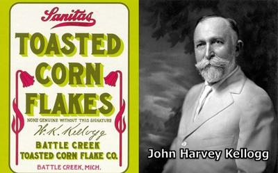

¿Sabías que el cereal Corn Flakes surgió como consecuencia de la aversión a los instintos eróticos que tenía cierto personaje, debido a sus creencias religiosas?


Es muy curioso, pero real. Se trata de John Harvey Kellogg (1852-1943), un médico estadounidense que a raíz de su invención de este cereal terminó convirtiéndose en empresario, y quien, desde una perspectiva psiquiátrica moderna, resulta ser un caso clínico e histórico muy peculiar. Durante décadas Kellogg dirigió el Battle Creek Sanitarium, una institución vinculada a la Iglesia Adventista del Séptimo Día, secta protestante que combinaba ideas de higiene, dieta vegetariana y «pureza moral», con una visión muy negativa del erotismo.
John Kellogg nació en una familia profundamente religiosa: su padre, John Preston Kellogg, participó en varias iglesias protestantes revivalistas, y finalmente, en la Iglesia Adventista del Séptimo Día —una denominación que enfatiza la «limpieza moral», la abstinencia y la reforma de la salud desde una perspectiva religiosa. Su familia se mudó a Battle Creek, Michigan, que era el epicentro del movimiento adventista, en el que su padre colaboró activamente, y donde John fue criado desde niño dentro de esta iglesia, lo que marcó profundamente su obsesiva visión sobre la «pureza» del cuerpo y del alma.
En esa época la Iglesia Adventista promovía un enfoque de salud que integraba el vegetarianismo y el control del cuerpo, con la abstinencia sexual y el control de los impulsos. Y dentro de este contexto religioso, habría emergido la obsesión de Kellogg en contra de la sexualidad. Incluso esto habría influido en su interés por estudiar medicina, carrera en la que se graduó en 1875. Sin embargo, su obsesión por ver el erotismo como algo sucio e inmoral llegó a tal extremo, que aunque se casó en 1879 con Ella Ervilla Eaton (1853-1920), el matrimonio nunca llegó a consumarse por la abstinencia autoimpuesta de Kellogg. Como consecuencia de esto, la pareja tuvo que vivir en casas separadas, y en vez de tener hijos propios, decidieron adoptar legalmente a siete, aunque terminaron criando a más de cuarenta.
Desde la psiquiatría hoy sabemos que la represión sexual es una inhibición de la libido como consecuencia de un rechazo consciente o inconsciente de impulsos naturales, a menudo debido a traumas, normas socioculturales o creencias religiosas, lo que genera conflictos internos, culpa, vergüenza, y frecuentemente disfunciones en la relación de pareja o trastornos de ansiedad. En el caso de Kellogg, esto llegó a niveles patológicos extremos.
En estas condiciones, Kellogg llegó incluso a desarrollar una grave obsesión contra el onanismo o masturbación (la autocomplacencia erótica). A esta actividad solitaria Kellogg atribuía toda clase de males: desde trastornos digestivos, hasta deterioro mental, pérdida de memoria, ceguera o locura. Hoy sabemos que tales prejuicios carecen por completo de base científica, y que eran solamente construcciones morales revestidas de lenguaje médico.
En el Sanatorio de Battle Creek, Kellog puso en práctica tratamientos supuestamente «holísticos» que se inventó y que eran muy controversiales, haciendo particular énfasis en la nutrición, el ejercicio físico; pero también en la aplicación de enemas a sus pacientes, utilizando agua con yogur. Y cuando sus tratamientos no surtían el efecto deseado, le echaba la culpa al auto-placer secreto del paciente, su principal obsesión.
Mientras que en el campo de la nutrición, Kellogg fue un firme defensor del vegetarianismo, y estaba convencido de que ciertos alimentos «estimulaban» los deseos libidinosos: carne, especias, café, alcohol, chocolate. Por el contrario, promovía una dieta blanda, insípida y monótona que, según él, «calmaba» el sistema nervioso, y con ello, los impulsos carnales.
Como consecuencia de esa lógica fue que surgieron los cereales laminados, entre ellos el Corn Flakes: comida seca, sin grasa, sin azúcar (en su versión original), fácil de digerir y deliberadamente poco excitante. No se trataba sólo de un desayuno, sino que era parte de un programa moral: el cuerpo debía ser domesticado por la dieta, para mantener al espíritu «puro». Así vemos aquí con claridad cómo una absurda creencia religiosa se infiltra en la práctica médica: el alimento no se diseña sólo para nutrir, sino para reprimir.
Claramente, desde la psiquiatría actual, se pueden señalar varios rasgos distintivos en la personalidad de Kellogg:
Una patológica obsesión por la sexualidad, sobre todo en torno a la masturbación y el control del deseo. Esto sugiere una fijación ansiosa, propia de personalidades con rasgos obsesivo-compulsivos, donde una idea moral se convierte en eje de toda la vida psíquica.
Una intelectualización moralizante del conflicto interno; una lucha interna que se externaliza en forma de teorías médicas, dietas, aparatos, tratamientos y prohibiciones.
Una represión extrema y posible aversión fóbica hacia la sexualidad. Lo suyo no fue una simple «castidad», sino una evitación sistemática, probablemente cargada de ansiedad.
Una racionalización seudocientífica, en que las creencias religiosas se visten de bata blanca, y la culpa teológica se convierte en «toxinas», «irritación nerviosa», «degeneración». El clásico mecanismo de transformar el «pecado» en patología, para legitimar el control.
Y por supuesto, la religión adventista —como muchas otras tradiciones religiosas— tuvo un papel determinante, al promover una visión dualista y antagónica del ser humano, donde un «alma» rivaliza con un cuerpo que es considerado corrupto de nacimiento. Y en estos casos, el placer erótico es algo en que no podemos confiar, mientras que el autocontrol es una virtud suprema. Obviamente, en una personalidad ya predispuesta a la rigidez moral y al pensamiento obsesivo, este marco actúa como amplificador.
Ciertamente Kellogg no fue sólo un individuo excéntrico; fue un producto y a la vez propagador de una cultura religiosa que convirtió funciones biológicas normales en fuentes de angustia y auto-odio. Su influencia se extendió a miles de pacientes y lectores de sus escritos, muchos de ellos convencidos de estar dañando su mente o su alma, por experimentar algo tan básico y natural como el deseo erótico.
Lo curioso es que, en este contexto sorprendentemente oscuro, surgió el Corn Flakes, hoy símbolo trivial del desayuno industrial, como un intento de controlar el cuerpo a través de la moral religiosa disfrazada de ciencia. Pero ahora sabemos que detrás de este cereal, hay una historia de represión, miedo y patologización del placer.
[Godless Freeman]
[Crédito de imagen: Roberto Cavada]
Comentarios
Comments powered by Disqus